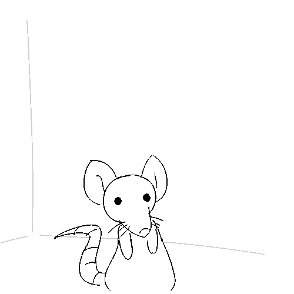
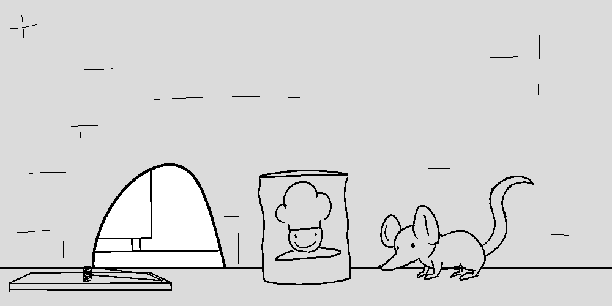
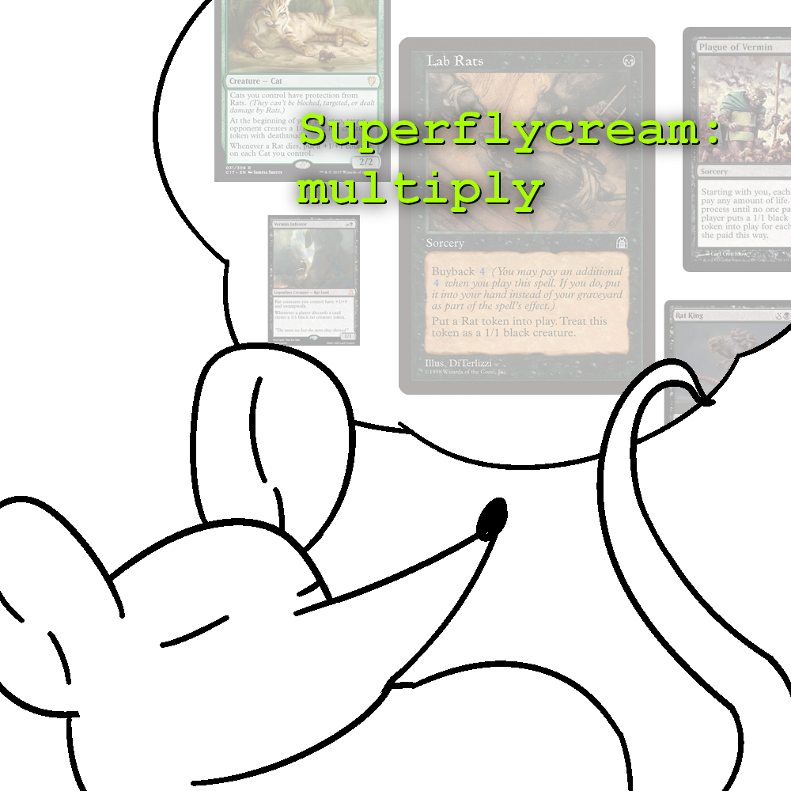
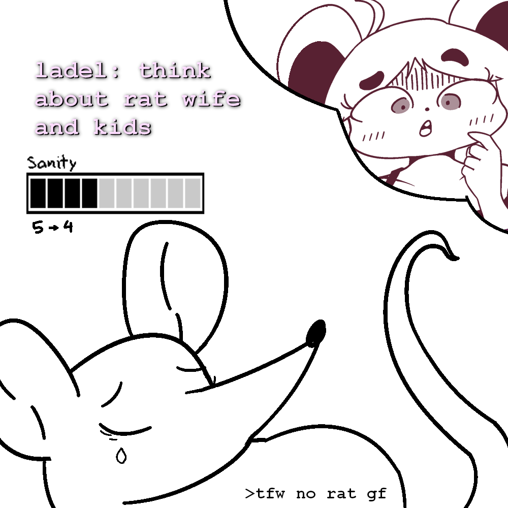
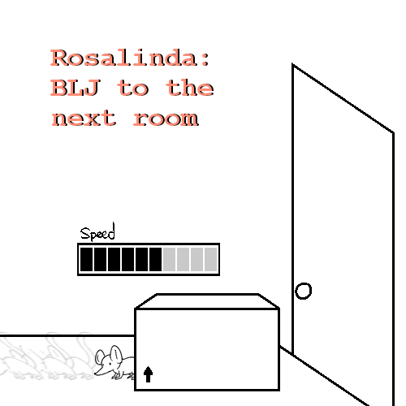

Name this rat

slap: "Bimpus"
A rat's purpose is far less complex to a human's, but in return they
live in a world far larger in their rightful perspective. What outer space is to us humans is what Earth
alone
is to the rats. Bimpus is just another ordinary rat who share's the same situation of life, no different to
any
other
rat.
His goal is to EAT WHATEVER HE CAN FIND and possibly FIND A MATE. Preferably, this is BEST BEFORE THE FOOD
CHAIN
GETS TO HIM or otherwise.
How will he go in doing so?
~~~~~~~~~~~~~

Mi5KL: step on trap, step on trap, STEP ON TRAP
Stepping on top of Bimpus's WORTHLESS BENCH PRESS does nothing. He feels a bit taller, at least.
~~~~~~~~~~~~~

slim: cum
Bimpus's HORNEY METER is currently at 1/10. In order to use your LIMIT: COOM, you must build meter to at least 7/10
~~~~~~~~~~~~~

Eggy: eat chef boyardee
The CAN OF FLAVOURISHIOUS LUCIANO has a SMALL PEBBLE inside it. Otherwise, there's a picture of a devilishly handsome young man with a wonderful hat. They say he's done something, but what he had done is unspoken of.
The pebble is added to your INVENTORY (0/2 => 1/2)
Doctagon: put can on top of trap
The CAN and the WROTHLESS BENCH PRESS create a BUNKER ON A STAND! Maybe if this thing had WHEELS it would operate like an automobile
~~~~~~~~~~~~~

Grudge: find rat gf
Bimpus dreams of one day being more active with the rest of the colony to find that special someone to love like there's no tomorrow. Someone to never let him go and mean it when she says she loves him. Hopefully he will wake up one day with a beautiful rat wife snuggled next to him, tangled whiskers and everything. But right now, it's just him: Bimpus in his hole
Perhaps now is the time to go hunting for rat gf's... but where? What does Bimpus know alone?

You hear something outside. The shaking it generates is as powerful as a human's
~~~~~~~~~~~~~

Eggy: peek out the cubby-hole to investigate
Exiting your doorway is safe. You head out with no stress
Nothing seems to be out of place right now, but wow it's BRIGHT IN HERE. For a home, humans sure have a lot of space. The intricate nature of a human's day-to-day life is fascinating, but beyond your comprehension for a RAT-BRAIN to understand
SIDENOTE: Intellect was revealed in this panel, but is rendered obsolete in the future
~~~~~~~~~~~~~

ladel: seduce the human
"Hey, uh, got a can of `FLAVOURISHIOUS LUCIANO...`
...Bimpus's HORNY meter goes up by +1 (1/10 => 2/10)
~~~~~~~~~~~~~

Various: investigate under the couch
Bimpus finds two items of significance: a REMOTE and a CLEANUP BOX. He's not sure what the latter is really useful for. The REMOTE is used for a TELEVISION, but this does not appear to be the MAIN REMOTE the humans in the house tend to use. Bimpus cannot carry the REMOTE because it takes up 4 of your inventory.
The CLEANUP BOX contains THIN LAYERS (x50) that each take up 0.04 of your inventory. Meanwhile, the CLEAN UP BOX ITSELF takes up 3 of Bimpus's inventory that he cannot carry with his MINIATURE MITTS
It's either Bimpus can work on his inventory or find an ALTERNATE MEAN to move these objects around
~~~~~~~~~~~~~

Grudge: smell the air for hitns of CHEASE
The feeble rodent's mind reaches the thoughts of DELICIOUS YUMYUM CHEASE-ERRONI... such WONDEROUS DELICACY that the humans carry around fill the young Bimpus' mind with solace, having to worry about going hungry in the night. Foods HARD TO GET, ALONE AT LEAST, but you'd risk your life to get something. Anything.
You realize your HUNGER meter went up by 1 (2/10 => 3/10)
~~~~~~~~~~~~~

Various: investigate the gnome statue
The ELF FIGURE stands grimly with it's blank face. It's rather COMPARABLY SCALED, filling the small pest with even more chills down its rump. But perhaps the LACKING DETAILS make it totally HARMLESS in appearance, keeping Bimpus' SANITY at (7/10) right now.
~~~~~~~~~~~~~

Battra: hit on the elf figure
You hit on the ELF FIGURE using the same line as last time
"Hey, I got a can of FLAVORISHIOUS LUCIANO...
The ELF FIGURE seems EXTREMELY DISPLEASED AND UNIMPRESSED as a result to Bimpus' LOOSE FLIRTING and TERRIBLE MANNERS. In return, Bimpus is growing more stressed out as the ELF FIGURE GETS OUT OF HAND`. He runs back into your little rat home in fear

Sanity -2 (7/10 => 5/10)
Horny -2 (2/10 => 0/10)
~~~~~~~~~~~~~

Battra: check inventory
Your current health status doesn't look perfect, but you're fine for now
~~~~~~~~~~~~~

Mi5KL: eat pebble
Bimpus takes a large single bite of the PEBBLE, making him lose his ONE TOOTH. He has lost the ABILITY TO CHEW, rendering him UNABLE TO EAT SOLIDS
Added tooth to inventory (1/2 => 1.5/2)
~~~~~~~~~~~~~

Grudge: go out of hole, grab the remote, climb onto the couch and push the power button to play the Wii
Not only does this Wii exceed past Bimpus's inventory capabilities, but he lacks the STRENGTH (2/10) to push it. Even worse, he won't be able to push the REMOTE up to couch even if Bimpus has 10/10 STRENGTH. Our famished rat child will require STRENGTH BEYOND HIS OWN CAPABILITY.
Also, pressing the power button appears to not do anything...
~~~~~~~~~~~~~

Jalorda: make fashionable clothing with thin tissues
That one time he's changed his viewing stance, Bimpus once watched TRASH TELIVISION about dresses. Taking 25x TISSUES from the TISSUE BOX (50/50 => 25/50), Bimpus creates a FINE-LOOKING DRESS that takes 0.5 of his INVENTORY (1.5/2 => 2/2).
~~~~~~~~~~~~~

Goat: do the Marilyn Monroe thing with the vent
Currently, there is no WIND FLOW going around the current area. Bimpus does his best to please the Rat Zone's participants
Feeling kinda silly :S
~~~~~~~~~~~~~

Super: multiply
Bimpus thinks up of the million ways you could approach this, but LACKS THE MATERIALS needed to multiply.
~~~~~~~~~~~~~

ladel: think about rat wife and kids
Bimpus... has never been close to a rat of the opposite sex. Of course, it's not like he has to and should be ashamed of it, but it saddens him nontheless. Trying not to think about it is a bit overwhelming, decreasing Bimpus's SANITY (5/10 => 4/10)
Be wary of reaching 2/10 SANITY, Bimpus may act a bit differently...
~~~~~~~~~~~~~

Rosa: BLJ to the next room
Upon reaching the next room, Bimpus hits a wall. Here, he has gained SPEED (3/10 => 6/10). Here, Bimpus can stop moving and immediately head back to having 3/10 SPEED, or he can keep hugging this wall to build up even more SPEED (+10/10).
~~~~~~~~~~~~~